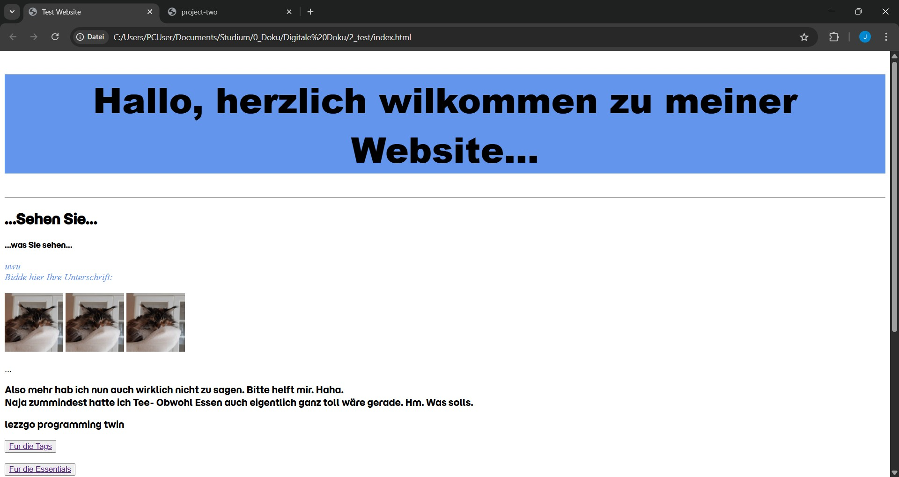
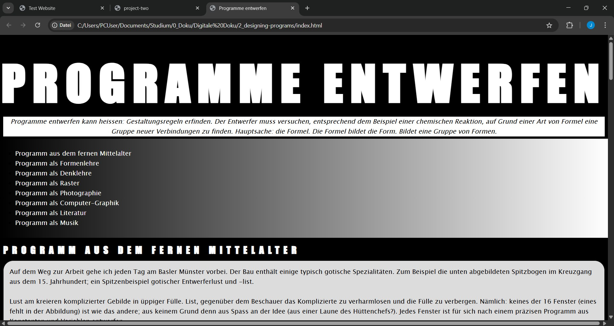

First
Steps


The very first website
Soooooo this is the very first (maybe second, whoops) website I've made. (Let's say made from scratch!) Well it's not the most beautiful,
nor is it very useful- Does'nt matter. All we did was throw some random snippets into an html ducoment. Fun.
The second one is a template from Katharia. The content (so the html) was a given and we were supposed to play around with the css.
Pretty interesting to work with. First thing i noticed is that its much better to work with more content, especially if you have plenty of text.
But at the same time, reflecting on it now, if all the content is already there, I get kind of stuck in a very simple and boring design.
It's way more intuitive and makes for more dynamic results, if the design and content creation happen simultaniously. Of cours it's still nice to have a clear idea
and some content ready, but making stuff up on the go and coordinating it with each other is like so mch better.
Look for yourself:
The Test-WebsiteThe Template-Website